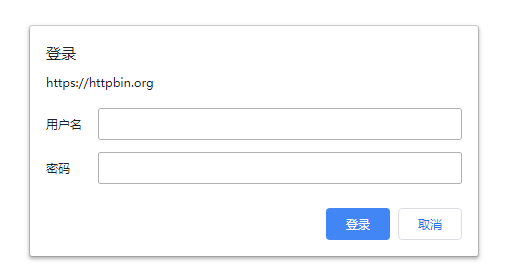

6.7.urllib
import urllib
Windows 10
Python 3.6.9 @ MSC v.1915 64 bit (AMD64)
Latest build date 2020.06.13
在 Python 2 中，有 urllib 和 urllib2 两个库来实现请求的发送。而在 Python 3 中，已经不存在 urllib2 这个库了，统一为 urllib，这是urllib的官方文档链接。
urllib 库是 Python 内置的 HTTP 请求库，它包含如下 4 个模块：
- request：它是最基本的 HTTP 请求模块，可以用来模拟发送请求。就像在浏览器里输入网址然后回车一样，只需要给库方法传入 URL 以及额外的参数，就可以模拟实现这个过程了。
- error：异常处理模块，如果出现请求错误，我们可以捕获这些异常，然后进行重试或其他操作以保证程序不会意外终止。
- parse：一个工具模块，提供了许多 URL 处理方法，比如拆分、解析、合并等。
- robotparser：主要是用来识别网站的 robots.txt 文件，然后判断哪些网站可以爬，哪些网站不可以爬，用得比较少。
request 模块
hurllib.request 模块提供了最基本的构造 HTTP 请求的方法，利用它可以模拟浏览器的一个请求发起过程，同时它还带有处理授权验证（authentication）、重定向（redirection)、浏览器 Cookies 以及其他内容。
urlopen
urllib.request.urlopen(url, data=None, [timeout,]*, cafile=None, capath=None,
cadefault=False)
# data 附加数据
# timeout 超时时间
# context 必须是 ssl.SSLContext 类型，用来指定 SSL 设置
# cafile 和 capath 分别指定 CA 证书和它的路径，这个在请求 HTTPS 链接时会有用
# cadefault 现在已经弃用了，其默认值为 False
例如，要请求 Python 官网：
import urllib.request
url = 'https://www.python.org'
# response是一个 HTTPResposne 类型的对象
response = urllib.request.urlopen(url=url)
# 读入网页内容 这是一个bytes字符串
response.read()
# 响应的状态码
response.status
# 响应的状态信息
response.reason
# 响应的头信息
response.getheaders()
# 获取响应的头信息的某个参数
response.getheader('Server')
'nginx'
主要包含 readinto、fileno 等方法，以及 msg、version、debuglevel、closed 等属性。
data 参数
如果要添加data参数，需要使用 bytes 方法将参数转化为字节流编码格式的内容，即 bytes 类型。另外，如果传递了这个参数，请求方式就不再是 GET 方式，而是 POST 方式。
# import urllib.parse
import urllib.request
# 使用了 bytes 方法编码成字节流
# data = bytes(urllib.parse.urlencode({'word': 'hello'}), encoding='utf8')
data = bytes("word=hello", encoding="utf-8")
response = urllib.request.urlopen('http://httpbin.org/post', data=data)
print(response.read().decode("utf-8"))
{
"args": {},
"data": "",
"files": {},
"form": {
"word": "hello"
},
"headers": {
"Accept-Encoding": "identity",
"Content-Length": "10",
"Content-Type": "application/x-www-form-urlencoded",
"Host": "httpbin.org",
"User-Agent": "Python-urllib/3.6",
"X-Amzn-Trace-Id": "Root=1-5ee46694-38358ae8257a47e8d0f88538"
},
"json": null,
"origin": "157.122.62.84",
"url": "http://httpbin.org/post"
}
请求的 URL 为：http://httpbin.org/post，这个链接可以用来测试 POST 请求，它可以输出 Request 的一些信息，其中就包含传递的 data 参数。
我们传递的参数出现在了 form 字段中，这表明是模拟了表单提交的方式，以 POST 方式传输数据。
timeout 参数
timeout 参数用于设置超时时间，单位为秒，意思就是如果请求超出了设置的这个时间，还没有得到响应，就会抛出 URLError 异常，URLError 异常属于 urllib.error 模块。如果不指定该参数，就会使用全局默认时间。它支持 HTTP、HTTPS、FTP 请求。
全局默认时间可以为
None，表示无超时限制。但即使全局默认时间为None，最后可能还是会发生超时，此时超时可能是HTTP网络超时。而不是超过了限定的时间。
import urllib.request
# 1秒内得到响应，则不会抛出URLError 异常
try:
response = urllib.request.urlopen('http://httpbin.org/get', timeout=1)
print(response.read().decode("utf-8"))
except:
print('TIME OUT')
{
"args": {},
"headers": {
"Accept-Encoding": "identity",
"Host": "httpbin.org",
"User-Agent": "Python-urllib/3.6",
"X-Amzn-Trace-Id": "Root=1-5ee46694-4499269c47c50804469a0aea"
},
"origin": "157.122.62.84",
"url": "http://httpbin.org/get"
}
可以通过设置这个超时时间来控制一个网页如果长时间未响应，就跳过它的抓取。
# need to fix. output should be 'TIME OUT 1'
import socket
import urllib.request
import urllib.error
try:
response = urllib.request.urlopen('http://httpbin.org/get', timeout=0.1)
except urllib.error.URLError as e:
if isinstance(e.reason, socket.timeout):
print('TIME OUT 1')
except Exception:
print('TIME OUT 2')
TIME OUT 1
一般来说，0.1 秒内基本不可能得到服务器响应，因此输出了 TIME OUT 的提示。
Request
利用 urlopen 方法可以实现最基本请求的发起，但这几个简单的参数并不足以构建一个完整的请求。如果请求中需要加入 Headers 等信息，可以利用更强大的 Request 类来构建。
import urllib.request
request = urllib.request.Request('https://python.org')
response = urllib.request.urlopen(request)
print(response.read().decode('utf-8'))
<!doctype html>
<!--[if lt IE 7]> <html class="no-js ie6 lt-ie7 lt-ie8 lt-ie9">
<![endif]-->
<!--[if IE 7]> <html class="no-js ie7 lt-ie8 lt-ie9">
<![endif]-->
<!--[if IE 8]> <html class="no-js ie8 lt-ie9">
<![endif]-->
<!--[if gt IE 8]><!--><html class="no-js"
.
.
.
0be1d290.js" charset="utf-8"></script>
<![endif]-->
</body>
</html>
依然是用 urlopen 方法来发送这个请求，只不过这次该方法的参数不再是 URL，而是一个 Request 类型的对象。通过构造这个数据结构，一方面我们可以将请求独立成一个对象，另一方面可更加丰富和灵活地配置参数。
Request 的构造方法如下：
class urllib.request.Request(url, data=None, headers={},
origin_req_host=None, unverifiable=False,
method=None)
url：用于请求 URL，这是必传参数，其他都是可选参数。
data：bytes（字节流）类型。如果它是字典，可以先用 urllib.parse 模块里的 urlencode() 编码。
headers：它是一个字典，也就是请求头，我们可以在构造请求时通过 headers 参数直接构造，也可以通过调用请求实例的 add_header() 方法添加。添加请求头最常用的用法就是通过修改 User-Agent 来伪装浏览器，默认的 User-Agent 是 Python-urllib，我们可以通过修改它来伪装浏览器。比如要伪装火狐浏览器，可以把它设置为：
Mozilla/5.0 (X11; U; Linux i686) Gecko/20071127 Firefox/2.0.0.11
origin_req_host：指的是请求方的 host 名称或者 IP 地址。
unverifiable：表示这个请求是否是无法验证的，默认是 False，意思就是说用户没有足够权限来选择接收这个请求的结果。例如，我们请求一个 HTML 文档中的图片，但是我们没有自动抓取图像的权限，这时 unverifiable 的值就是 True。
method：是一个字符串，用来指示请求使用的方法，比如 GET、POST 和 PUT 等。
下面我们传入多个参数构建请求来看一下：
from urllib import request, parse
url = 'http://httpbin.org/post'
headers = {'User-Agent': 'Mozilla/4.0 (compatible; MSIE 5.5; Windows NT)',
'Host': 'httpbin.org'}
dict = {'name': 'Germey'}
data = bytes(parse.urlencode(dict), encoding='utf8') # data = b'name=Germey'
req = request.Request(url=url, data=data, headers=headers, method='POST')
response = request.urlopen(req)
print(response.read().decode('utf-8'))
{
"args": {},
"data": "",
"files": {},
"form": {
"name": "Germey"
},
"headers": {
"Accept-Encoding": "identity",
"Content-Length": "11",
"Content-Type": "application/x-www-form-urlencoded",
"Host": "httpbin.org",
"User-Agent": "Mozilla/4.0 (compatible; MSIE 5.5; Windows NT)",
"X-Amzn-Trace-Id": "Root=1-5ee46699-5c8f13e39c460e544f38df00"
},
"json": null,
"origin": "157.122.62.84",
"url": "http://httpbin.org/post"
}
这里我们通过 4 个参数构造了一个请求，其中 url 即请求 URL，headers 中指定了 User-Agent 和 Host，参数 data 用 urlencode 和 bytes 方法转成字节流。另外，指定了请求方式为 POST。
观察结果可以发现，我们成功设置了 data、headers 和 method。
另外，headers 也可以用 add_header 方法来添加：
req = request.Request(url=url, data=data, method='POST')
req.add_header('User-Agent', 'Mozilla/4.0 (compatible; MSIE 5.5; Windows NT)')
Handler
在上面的过程中，虽然可以构造请求，但如果要处理一些更高级的操作（比如 Cookies 处理、代理设置等），则需要 Handler 。我们可以把 Handler 理解为各种处理器，有专门处理登录验证的，有处理 Cookies 的，有处理代理设置的。利用它们，我们几乎可以做到 HTTP 请求中所有的事情。
urllib.request 模块里的 BaseHandler 类是所有其他 Handler 的父类，它提供了最基本的方法，例如 default_open、protocol_request 等。
接下来，就有各种 Handler 子类继承这个 BaseHandler 类，举例如下：
- HTTPDefaultErrorHandler 用于处理 HTTP 响应错误，错误都会抛出 HTTPError 类型的异常。
- HTTPRedirectHandler 用于处理重定向。
- HTTPCookieProcessor 用于处理 Cookies。
- ProxyHandler 用于设置代理，默认代理为空。
- HTTPPasswordMgr 用于管理密码，它维护了用户名密码的表。
- HTTPBasicAuthHandler 用于管理认证，如果一个链接打开时需要认证，那么可以用它来解决认证问题。
另外还有其他的 Handler 类，在这不一一列举了，详情可以参考官方文档： https://docs.python.org/3/library/urllib.request.html#urllib.request.BaseHandler
关于怎么使用它们，现在先不用着急，后面会有实例演示。
另一个比较重要的类就是 OpenerDirector，我们可以称为 Opener。我们之前用过 urlopen 这个方法，实际上它就是 urllib 为我们提供的一个 Opener。
那么，为什么要引入 Opener 呢？因为需要实现更高级的功能。之前使用的 Request 和 urlopen 相当于类库为你封装好了极其常用的请求方法，利用它们可以完成基本的请求，但是现在不一样了，我们需要实现更高级的功能，所以需要深入一层进行配置，使用更底层的实例来完成操作，所以这里就用到了 Opener。
Opener 可以使用 open 方法，返回的类型和 urlopen 如出一辙。那么，它和 Handler 有什么关系呢？简而言之，就是利用 Handler 来构建 Opener。
下面用几个实例来看看它们的用法。
验证
有些网站在打开时就会弹出提示框，直接提示你输入用户名和密码，验证成功后才能查看页面，如图所示：

HTTPBasicAuthHandler 就可以请求这样的页面：
from urllib.request import (
HTTPPasswordMgrWithDefaultRealm, HTTPBasicAuthHandler, build_opener
)
from urllib.error import URLError
username = 'name'
password = '12345678'
url = 'https://httpbin.org/basic-auth/name/12345678'
p = HTTPPasswordMgrWithDefaultRealm()
p.add_password(None, url, username, password)
auth_handler = HTTPBasicAuthHandler(p)
opener = build_opener(auth_handler)
try:
result = opener.open(url)
html = result.read().decode('utf-8')
print(html)
except URLError as e:
print(e.reason)
{
"authenticated": true,
"user": "name"
}
这里首先实例化 HTTPBasicAuthHandler 对象，其参数是 HTTPPasswordMgrWithDefaultRealm 对象，它利用 add_password 方法添加进去用户名和密码，这样就建立了一个处理验证的 Handler。
接下来，利用这个 Handler 并使用 build_opener 方法构建一个 Opener，这个 Opener 在发送请求时就相当于已经验证成功了。
接下来，利用 Opener 的 open 方法打开链接，就可以完成验证了。这里获取到的结果就是验证后的页面源码内容。
代理
在做爬虫的时候，免不了要使用代理，如果要添加代理，可以这样做：
from urllib.error import URLError
from urllib.request import ProxyHandler, build_opener
proxy_handler = ProxyHandler({
'http': 'http://127.0.0.1:9743',
'https': 'https://127.0.0.1:9743'
})
opener = build_opener(proxy_handler)
try:
response = opener.open('https://www.baidu.com')
print(response.read().decode('utf-8'))
except URLError as e:
print(e.reason)
[WinError 10061] No connection could be made because the target
machine actively refused it
这里我们在本地搭建了一个代理，它运行在 9743 端口上。
这里使用了 ProxyHandler，其参数是一个字典，键名是协议类型（比如 HTTP 或者 HTTPS 等），键值是代理链接，可以添加多个代理。
然后，利用这个 Handler 及 build_opener 方法构造一个 Opener，之后发送请求即可。
Cookies
获取网站的 Cookies，相关代码如下：
首先，我们必须声明一个 CookieJar 对象。接下来，就需要利用 HTTPCookieProcessor 来构建一个 Handler，最后利用 build_opener 方法构建出 Opener，执行 open 函数即可。
import http.cookiejar, urllib.request
cookie = http.cookiejar.CookieJar()
handler = urllib.request.HTTPCookieProcessor(cookie)
opener = urllib.request.build_opener(handler)
response = opener.open('http://www.baidu.com')
for item in cookie:
print(item.name+"="+item.value)
BAIDUID=A5F653A099838B93FFDFA2E2E5DF2B7F:FG=1
BIDUPSID=A5F653A099838B93B7152CE45EB47D2A
H_PS_PSSID=31906_1420_31669_21080_31069_31253_31765_32045_30823_26350
PSTM=1592026781
BDSVRTM=0
BD_HOME=1
可以看到，这里输出了每条 Cookie 的名称和值。
不过既然能输出，那可不可以输出成文件格式呢？我们知道 Cookies 实际上也是以文本形式保存的。
答案当然是肯定的，这里通过下面的实例来看看：
filename = 'cookies.txt'
cookie = http.cookiejar.MozillaCookieJar(filename)
handler = urllib.request.HTTPCookieProcessor(cookie)
opener = urllib.request.build_opener(handler)
response = opener.open('http://www.baidu.com')
cookie.save(ignore_discard=True, ignore_expires=True)
这时 CookieJar 就需要换成 MozillaCookieJar，它在生成文件时会用到，是 CookieJar 的子类，可以用来处理 Cookies 和文件相关的事件，比如读取和保存 Cookies，可以将 Cookies 保存成 Mozilla 型浏览器的 Cookies 格式。
运行之后，可以发现生成了一个 cookies.txt 文件，其内容如下：
# Netscape HTTP Cookie File
# http://curl.haxx.se/rfc/cookie_spec.html
# This is a generated file! Do not edit.
.baidu.com TRUE / FALSE 3622386254 BAIDUID 05AE39B5F56C1DEC474325CDA522D44F:FG=1
.baidu.com TRUE / FALSE 3622386254 BIDUPSID 05AE39B5F56C1DEC474325CDA522D44F
.baidu.com TRUE / FALSE H_PS_PSSID 19638_1453_17710_18240_21091_18560_17001_
21191_21161
.baidu.com TRUE / FALSE 3622386254 PSTM 1474902606
www.baidu.com FALSE / FALSE BDSVRTM 0
www.baidu.com FALSE / FALSE BD_HOME 0
另外，LWPCookieJar 同样可以读取和保存 Cookies，但是保存的格式和 MozillaCookieJar 不一样，它会保存成 libwww-perl(LWP) 格式的 Cookies 文件。
要保存成 LWP 格式的 Cookies 文件，可以在声明时就改为：
cookie = http.cookiejar.LWPCookieJar(filename)
此时生成的内容如下：
#LWP-Cookies-2.0
Set-Cookie3: BAIDUID="0CE9C56F598E69DB375B7C294AE5C591:FG=1"; path="/"; domain=".baidu.com"; path_spec;
domain_dot; expires="2084-10-14 18:25:19Z"; version=0
Set-Cookie3: BIDUPSID=0CE9C56F598E69DB375B7C294AE5C591; path="/"; domain=".baidu.com"; path_spec; domain_dot;
expires="2084-10-14 18:25:19Z"; version=0
Set-Cookie3: H_PS_PSSID=20048_1448_18240_17944_21089_21192_21161_20929; path="/"; domain=".baidu.com";
path_spec; domain_dot; discard; version=0
Set-Cookie3: PSTM=1474902671; path="/"; domain=".baidu.com"; path_spec; domain_dot; expires="2084-10-14
18:25:19Z"; version=0
Set-Cookie3: BDSVRTM=0; path="/"; domain="www.baidu.com"; path_spec; discard; version=0
Set-Cookie3: BD_HOME=0; path="/"; domain="www.baidu.com"; path_spec; discard; version=0
由此看来，生成的格式还是有比较大差异的。
那么，生成了 Cookies 文件后，怎样从文件中读取并利用呢？
下面我们以 LWPCookieJar 格式为例来看一下：
cookie = http.cookiejar.LWPCookieJar()
cookie.load('cookies.txt', ignore_discard=True, ignore_expires=True)
handler = urllib.request.HTTPCookieProcessor(cookie)
opener = urllib.request.build_opener(handler)
response = opener.open('http://www.baidu.com')
print(response.read().decode('utf-8'))
可以看到，这里调用 load 方法来读取本地的 Cookies 文件，获取到了 Cookies 的内容。不过前提是我们首先生成了 LWPCookieJar 格式的 Cookies，并保存成文件，然后读取 Cookies 之后使用同样的方法构建 Handler 和 Opener 即可完成操作。
运行结果正常的话，会输出百度网页的源代码。
通过上面的方法，我们可以实现绝大多数请求功能的设置了。
这便是 urllib 库中 request 模块的基本用法，如果想实现更多的功能，可以参考官方文档的说明：https://docs.python.org/3/library/urllib.request.html#basehandler-objects。
处理异常
urllib 的 error 模块定义了由 request 模块产生的异常。如果出现了问题，request 模块便会抛出 error 模块中定义的异常。error 模块定义了三种异常:
['ContentTooShortError', 'HTTPError', 'URLError']
URLError
URLError 类来自 urllib 库的 error 模块，它继承自OSError类，是 error 异常模块的基类，由 request 模块产生的异常都可以通过捕获这个类来处理。
它具有一个属性 reason，即返回错误的原因。
from urllib import request, error
try:
# 请求一个不存在的网页
response = request.urlopen('https://cuiqingcai.com/index.htm')
except error.URLError as e:
print(e.reason)
Bad Gateway
HTTPError
它是 URLError的子类，专门用来处理 HTTP 请求错误，比如认证请求失败等。它有如下 3 个属性。
-
code：返回 HTTP 状态码，比如 404 表示网页不存在，500 表示服务器内部错误等。
-
reason：同父类一样，用于返回错误的原因。
-
headers：返回请求头。
from urllib import request,error
try:
response = request.urlopen('https://cuiqingcai.com/index.htm')
except error.HTTPError as e:
print(e.reason, e.code, e.headers, sep='\n')
Not Found
404
Server: nginx/1.10.3 (Ubuntu)
Date: Sat, 13 Jun 2020 05:40:02 GMT
Content-Type: text/html; charset=UTF-8
Transfer-Encoding: chunked
Connection: close
Set-Cookie: PHPSESSID=82bor4hv5of8dd5dbdppp8jut2; path=/
Pragma: no-cache
Vary: Cookie
Expires: Wed, 11 Jan 1984 05:00:00 GMT
Cache-Control: no-cache, must-revalidate, max-age=0
Link: <https://cuiqingcai.com/wp-json/>; rel="https://api.w.org/"
依然是同样的网址，这里捕获了 HTTPError异常，输出了 reason、code 和 headers 属性。
因为 URLError是 HTTPError的父类，所以可以先选择捕获子类的错误，再去捕获父类的错误，所以上述代码更好的写法如下：
from urllib import request, error
try:
response = request.urlopen('https://cuiqingcai.com/index.htm')
except error.HTTPError as e:
print(e.reason, e.code, e.headers, sep='\n')
except error.URLError as e:
print(e.reason)
else:
print('Request Successfully')
Not Found
404
Server: nginx/1.10.3 (Ubuntu)
Date: Sat, 13 Jun 2020 05:40:02 GMT
Content-Type: text/html; charset=UTF-8
Transfer-Encoding: chunked
Connection: close
Set-Cookie: PHPSESSID=ekbuprp6akme47u5dm53uecti2; path=/
Pragma: no-cache
Vary: Cookie
Expires: Wed, 11 Jan 1984 05:00:00 GMT
Cache-Control: no-cache, must-revalidate, max-age=0
Link: <https://cuiqingcai.com/wp-json/>; rel="https://api.w.org/"
这样就可以做到先捕获 HTTPError，获取它的错误状态码、原因、headers 等信息。如果不是 HTTPError异常，就会捕获 URLError异常，输出错误原因。最后，用 else 来处理正常的逻辑。这是一个较好的异常处理写法。
有时候，reason 属性返回的不一定是字符串，也可能是一个对象。再看下面的实例：
import socket
import urllib.request
import urllib.error
try:
response = urllib.request.urlopen('https://www.baidu.com', timeout=0.01)
except urllib.error.URLError as e:
print(type(e.reason))
if isinstance(e.reason, socket.timeout):
print('TIME OUT')
<class 'socket.timeout'>
TIME OUT
这里我们直接设置超时时间来强制抛出 timeout 异常。
可以发现，reason 属性的结果是 socket.timeout 类。所以，这里我们可以用 isinstance方法来判断它的类型，作出更详细的异常判断。
解析链接
urllib 库的 parse 模块，它定义了处理 URL 的标准接口，例如实现 URL 各部分的抽取、合并以及链接转换。它支持如下协议的 URL 处理：file、ftp、gopher、hdl、http、https、imap、mailto、 mms、news、nntp、prospero、rsync、rtsp、rtspu、sftp、 sip、sips、snews、svn、svn+ssh、telnet 和 wais。
urlparse
该方法可以实现 URL 的识别和分段：
urllib.parse.urlparse(urlstring, scheme='', allow_fragments=True)
-
urlstring：待解析的 URL -
scheme：它是默认的协议（比如 http 或 https 等）。 scheme 参数只有在 urlstring 中不包含 scheme 信息时才生效。 -
allow_fragments：是否忽略 fragment。 如果设置为 False，fragment 部分就会被忽略，它会被解析为 path、parameters 或者 query 的一部分，而 fragment 部分为空。当 URL 中不包含 params 和 query 时，fragment 便会被解析为 path 的一部分
例子：
from urllib.parse import urlparse
result = urlparse('http://www.baidu.com/index.html;user?id=5#comment')
print(type(result), result)
<class 'urllib.parse.ParseResult'> ParseResult(scheme='http',
netloc='www.baidu.com', path='/index.html', params='user',
query='id=5', fragment='comment')
可以看到，返回结果是一个 ParseResult类型的对象，它包含 6 个部分，分别是 scheme、netloc、path、params、query 和 fragment。
观察一下该实例的 URL：
http://www.baidu.com/index.html;user?id=5#comment
可以发现，urlparse 方法将其拆分成了 6 个部分。大体观察可以发现，解析时有特定的分隔符。比如，:// 前面的就是 scheme，代表协议；第一个 / 符号前面便是 netloc，即域名，后面是 path，即访问路径；分号；后面是 params，代表参数；问号？后面是查询条件 query，一般用作 GET 类型的 URL；井号 #后面是锚点，用于直接定位页面内部的下拉位置。
所以，可以得出一个标准的链接格式，具体如下：
scheme://netloc/path;params?query#fragment
一个标准的 URL 都会符合这个规则，利用 urlparse方法可以将它拆分开来。
返回结果 ParseResult实际上是一个元组，我们可以用索引顺序来获取，也可以用属性名获取。示例如下：
from urllib.parse import urlparse
result = urlparse('http://www.baidu.com/index.html#comment',
allow_fragments=False)
print(result.scheme, result[0], result.netloc, result[1], sep='\n')
http
http
www.baidu.com
www.baidu.com
urlunparse
有了 urlparse方法，相应地就有了它的对立方法 urlunparse。它接受的参数是一个可迭代对象，但是它的长度必须是 6，否则会抛出参数数量不足或者过多的问题。
from urllib.parse import urlunparse
data = ['http', 'www.baidu.com', 'index.html', 'user', 'a=6', 'comment']
print(urlunparse(data))
http://www.baidu.com/index.html;user?a=6#comment
这里参数 data 用了列表类型。当然，你也可以用其他类型，比如元组或者特定的数据结构。
urlsplit
这个方法和 urlparse方法非常相似，只不过它不再单独解析 params这一部分，只返回 5 个结果。上面例子中的 params会合并到 path 中。示例如下：
from urllib.parse import urlsplit
result = urlsplit('http://www.baidu.com/index.html;user?id=5#comment')
print(result)
SplitResult(scheme='http', netloc='www.baidu.com',
path='/index.html;user', query='id=5', fragment='comment')
可以发现，返回结果是 SplitResult，它其实也是一个元组类型，既可以用属性获取值，也可以用索引来获取。
urlunsplit
与 urlunparse方法类似，它也是将链接各个部分组合成完整链接的方法，传入的参数也是一个可迭代对象，例如列表、元组等，唯一的区别是长度必须为 5。示例如下：
from urllib.parse import urlunsplit
data = ['http', 'www.baidu.com', 'index.html', 'a=6', 'comment']
print(urlunsplit(data))
http://www.baidu.com/index.html?a=6#comment
urljoin
有了 urlunparse和 urlunsplit方法，我们可以完成链接的合并，不过前提必须要有特定长度的对象，链接的每一部分都要清晰分开。
此外，生成链接还有另一个方法，那就是 urljoin方法。我们可以提供一个 base_url（基础链接）作为第一个参数，将新的链接作为第二个参数，该方法会分析 base_url 的 scheme、netloc 和 path 这 3 个内容并对新链接缺失的部分进行补充，最后返回结果。
from urllib.parse import urljoin
print(urljoin('http://www.baidu.com', 'FAQ.html'))
print(urljoin('http://www.baidu.com', 'https://cuiqingcai.com/FAQ.html'))
print(urljoin('http://www.baidu.com/about.html', 'https://cuiqingcai.com/FAQ.html'))
print(urljoin('http://www.baidu.com/about.html', 'https://cuiqingcai.com/FAQ.html?question=2'))
print(urljoin('http://www.baidu.com?wd=abc', 'https://cuiqingcai.com/index.php'))
print(urljoin('http://www.baidu.com', '?category=2#comment'))
print(urljoin('www.baidu.com', '?category=2#comment'))
print(urljoin('www.baidu.com#comment', '?category=2'))
http://www.baidu.com/FAQ.html
https://cuiqingcai.com/FAQ.html
https://cuiqingcai.com/FAQ.html
https://cuiqingcai.com/FAQ.html?question=2
https://cuiqingcai.com/index.php
http://www.baidu.com?category=2#comment
www.baidu.com?category=2#comment
www.baidu.com?category=2
可以发现，base_url 提供了三项内容 scheme、netloc 和 path。如果这 3 项在新的链接里不存在，就予以补充；如果新的链接存在，就使用新的链接的部分。而 base_url 中的 params、query 和 fragment 是不起作用的。
urlencode
urlencode在构造 GET 请求参数的时候非常有用，示例如下：
from urllib.parse import urlencode
params = {
'name': 'germey',
'age': 22
}
base_url = 'http://www.baidu.com?'
url = base_url + urlencode(params)
print(url)
http://www.baidu.com?name=germey&age=22
这里首先声明了一个字典来将参数表示出来，然后调用 urlencode 方法将其序列化为 GET 请求参数。
这个方法非常常用。有时为了更加方便地构造参数，我们会事先用字典来表示。要转化为 URL 的参数时，只需要调用该方法即可。
parse_qs
有了序列化，必然就有反序列化。如果我们有一串 GET 请求参数，利用 parse_qs方法，就可以将它转回字典，示例如下：
from urllib.parse import parse_qs
query = 'name=germey&age=22'
print(parse_qs(query))
{'name': ['germey'], 'age': ['22']}
可以看到，这样就成功转回为字典类型了。
parse_qsl
还有一个 parse_qsl方法，它用于将参数转化为元组组成的列表，示例如下：
from urllib.parse import parse_qsl
query = 'name=germey&age=22'
print(parse_qsl(query))
[('name', 'germey'), ('age', '22')]
可以看到，运行结果是一个列表，而列表中的每一个元素都是一个元组，元组的第一个内容是参数名，第二个内容是参数值。
quote
该方法可以将内容转化为 URL 编码的格式。URL 中带有中文参数时，有时可能会导致乱码的问题，此时用这个方法可以将中文字符转化为 URL 编码，示例如下：
from urllib.parse import quote
keyword = ' 壁纸 '
url = 'https://www.baidu.com/s?wd=' + quote(keyword)
print(url)
https://www.baidu.com/s?wd=%20%E5%A3%81%E7%BA%B8%20
unquote
有了 quote 方法，当然还有 unquote 方法，它可以进行 URL 解码，示例如下：
from urllib.parse import unquote
url = 'https://www.baidu.com/s?wd=% E5% A3%81% E7% BA% B8'
print(unquote(url))
https://www.baidu.com/s?wd=% E5% A3�% E7% BA% B8
这是上面得到的 URL 编码后的结果，再利用 unquote 方法还原。
分析 Robots 协议
利用 urllib 的 robotparser 模块，我们可以实现网站 Robots 协议的分析。
Robots 协议
Robots 协议也称作爬虫协议、机器人协议，它的全名叫作网络爬虫排除标准（Robots Exclusion Protocol），用来告诉爬虫和搜索引擎哪些页面可以抓取，哪些不可以抓取。它通常是一个叫作 robots.txt 的文本文件，一般放在网站的根目录下。
当搜索爬虫访问一个站点时，它首先会检查这个站点根目录下是否存在 robots.txt 文件，如果存在，搜索爬虫会根据其中定义的爬取范围来爬取。如果没有找到这个文件，搜索爬虫便会访问所有可直接访问的页面。
下面是一个 robots.txt 的样例：
User-agent: *
Disallow: /
Allow: /public/
这实现了对所有搜索爬虫只允许爬取 public 目录的功能，将上述内容保存成 robots.txt 文件，放在网站的根目录下，和网站的入口文件（比如 index.php、index.html 和 index.jsp 等）放在一起。
上面的 User-agent 描述了搜索爬虫的名称，这里将其设置为 * 则代表该协议对任何爬取爬虫有效。比如，我们可以设置：
User-agent: Baiduspider
这就代表我们设置的规则对百度爬虫是有效的。如果有多条 User-agent 记录，则就会有多个爬虫会受到爬取限制，但至少需要指定一条。
Disallow 指定了不允许抓取的目录，比如上例子中设置为 / 则代表不允许抓取所有页面。
Allow 一般和 Disallow 一起使用，一般不会单独使用，用来排除某些限制。现在我们设置为 /public/，则表示所有页面不允许抓取，但可以抓取 public 目录。
下面我们再来看几个例子。禁止所有爬虫访问任何目录的代码如下：
User-agent: *
Disallow: /
允许所有爬虫访问任何目录的代码如下：
User-agent: *
Disallow:
另外，直接把 robots.txt 文件留空也是可以的。
禁止所有爬虫访问网站某些目录的代码如下：
User-agent: *
Disallow: /private/
Disallow: /tmp/
只允许某一个爬虫访问的代码如下：
User-agent: WebCrawler
Disallow:
User-agent: *
Disallow: /
这些是 robots.txt 的一些常见写法。
爬虫名称
大家可能会疑惑，爬虫名是哪儿来的？为什么就叫这个名？其实它是有固定名字的了，比如百度的就叫作 BaiduSpider。下表列出了一些常见的搜索爬虫的名称及对应的网站。
| 爬虫名称 | 名 称 | 网 站 |
|---|---|---|
| BaiduSpider | 百度 | www.baidu.com |
| Googlebot | 谷歌 | www.google.com |
| 360Spider | 360 搜索 | www.so.com |
| YodaoBot | 有道 | www.youdao.com |
| ia_archiver | Alexa | www.alexa.cn |
| Scooter | altavista | www.altavista.com |
robotparser
了解 Robots 协议之后，我们就可以使用 robotparser 模块来解析 robots.txt 了。该模块提供了一个类 RobotFileParser，它可以根据某网站的 robots.txt 文件来判断一个爬取爬虫是否有权限来爬取这个网页。
该类用起来非常简单，只需要在构造方法里传入 robots.txt 的链接即可。首先看一下它的声明：
urllib.robotparser.RobotFileParser(url='')
<urllib.robotparser.RobotFileParser at 0x1dbbcc44d30>
当然，也可以在声明时不传入，默认为空，最后再使用 set_url()方法设置一下也可。
下面列出了这个类常用的几个方法。
-
set_url：用来设置 robots.txt 文件的链接。如果在创建RobotFileParser对象时传入了链接，那么就不需要再使用这个方法设置了。 -
read：读取 robots.txt 文件并进行分析。注意，这个方法执行一个读取和分析操作，如果不调用这个方法，接下来的判断都会为 False，所以一定记得调用这个方法。这个方法不会返回任何内容，但是执行了读取操作。 -
parse：用来解析 robots.txt 文件，传入的参数是 robots.txt 某些行的内容，它会按照 robots.txt 的语法规则来分析这些内容。 -
can_fetch：该方法传入两个参数，第一个是 User-agent，第二个是要抓取的 URL。返回的内容是该搜索引擎是否可以抓取这个 URL，返回结果是 True 或 False。 -
mtime：返回的是上次抓取和分析 robots.txt 的时间，这对于长时间分析和抓取的搜索爬虫是很有必要的，你可能需要定期检查来抓取最新的 robots.txt。 -
modified：它同样对长时间分析和抓取的搜索爬虫很有帮助，将当前时间设置为上次抓取和分析 robots.txt 的时间。
这里以简书为例，首先创建 RobotFileParser对象，然后通过 set_url 方法设置了 robots.txt 的链接：
# need to fix
from urllib.robotparser import RobotFileParser
rp = RobotFileParser()
rp.set_url('http://www.jianshu.com/robots.txt')
rp.read()
print(rp.can_fetch('*', 'http://www.jianshu.com/p/b67554025d7d'))
print(rp.can_fetch('*', "http://www.jianshu.com/search?q=python&page=1&type=collections"))
False
False
当然，不用这个方法的话，可以在声明时直接用如下方法设置：
rp = RobotFileParser('http://www.jianshu.com/robots.txt')
接着利用 can_fetch 方法判断了网页是否可以被抓取。
这里同样可以使用 parse 方法执行读取和分析，示例如下：
# need to fix
from urllib.robotparser import RobotFileParser
from urllib.request import urlopen
rp = RobotFileParser()
rp.parse(urlopen('http://www.jianshu.com/robots.txt').read().decode('utf-8').split('\n'))
print(rp.can_fetch('*', 'http://www.jianshu.com/p/b67554025d7d'))
print(rp.can_fetch('*', "http://www.jianshu.com/search?q=python&page=1&type=collections"))